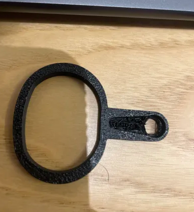
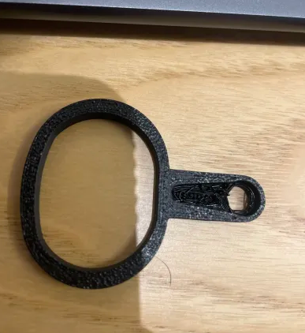

The Problem
We've all been there - you're comfortable in bed, about to fall asleep, and realize the lights are still on. Getting up to flip the switch is annoying, especially when you're already settled in. I decided to engineer a solution that would let me control my lights without leaving my bed.
The Solution
I designed and built a device that physically toggles a light switch using a servo motor with a custom-designed arm. The system is controlled wirelessly via a handheld remote, allowing me to turn the lights on and off from anywhere in the room - especially from the comfort of my bed.
Technologies Used
Key Features
- Wireless Control: RF transmitter and receiver enable remote operation from across the room
- Custom Mechanical Design: 3D-modeled arm in SolidWorks perfectly fits standard light switches
- Reliable Actuation: Servo motor provides precise and consistent switch toggling
- Extended Battery Life: Optimized power consumption using assembly language
- Easy Installation: Mounts directly onto existing light switches without modification
100x
Battery Life Improvement
10 Days
Battery Duration After Optimization
Design Process
The project began with designing the mechanical arm in SolidWorks. The arm needed to reliably flip a standard toggle switch while being compact enough to mount on the wall without being obtrusive. After several iterations, I arrived at a design that could be 3D printed and provided the right leverage for consistent switching.
The electronics consisted of two Arduino systems: one in the remote (transmitter) and one mounted at the light switch (receiver). The RF communication module allowed wireless control from across the room without line-of-sight requirements.
The most challenging aspect was power optimization. Initially, the device drained batteries in just 10 hours. By rewriting critical sections in assembly language and implementing aggressive sleep modes, I extended the battery life to 10 days - a 24x improvement that made the device practical for everyday use.
Technical Challenges Overcome
- Power Optimization: Achieved 24x battery life improvement through assembly language optimization and sleep mode implementation
- Mechanical Design: Created a custom arm that works reliably with different switch positions and provides sufficient torque
- Signal Reliability: Tuned RF communication to work consistently through walls and at various distances
- Mounting Solution: Designed a secure mounting system that doesn't damage walls or switches
Project Images

 

What I Learned
- Low-level programming in assembly language for microcontroller optimization
- Power management techniques for battery-operated devices
- 3D modeling and CAD design with SolidWorks
- RF communication protocols and antenna design considerations
- Iterative prototyping and testing methodologies
- The importance of user experience in home automation devices
Future Improvements
Potential enhancements for this project include:
- Integration with smart home systems (Alexa, Google Home)
- Multiple switch control from a single remote
- Smartphone app for modern wireless control
- Solar charging capability for indefinite battery life
- Voice control integration
- Dimmer switch compatibility